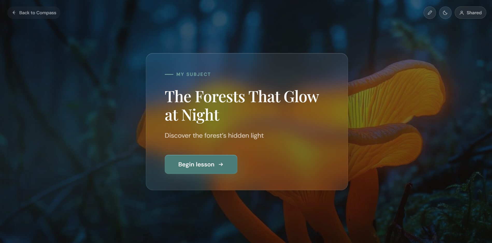

01 Subject cover
A world worth opening.
Give a subject its own identity.
A first glimpse of where the lesson could go.

Inside Atlas
From the first spark of curiosity to the conversation in the room.
01 Subject cover
Give a subject its own identity.
A first glimpse of where the lesson could go.

02 Compass overview
A structured subject, ready to explore.
Discussion, cultural perspectives and reflection.

03 · Focus mode
Space for the question. Room for the answer.
Teach directly from Atlas.

Back to Inside Atlas
End of the showcase study. The existing page would continue here.
View the sequence again